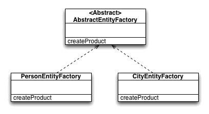

Code base
This application accesses an API and displays the information in a limited buffer through the use of list views. The API in question supplies a list of countries, cities, and people each with some basic information to display.
Project Hierarchy
This project is implemented in Android. Below you will find the layout of the project and a basic idea of the structure. For each Country, or City chosen a Google map view will open to display it.
Observer
I would consider Observer to be the primary pattern, and the others to be ‘idioms’.
The Observer pattern has the
biggest role in my code; it is used to update the ‘views’ of an element added
to the list. The ‘RequestSubject’
class is used to manage connections to the API and sending updates to the ‘ListObserver’, which directly adds
responses to the view through ‘BufferAdapter
‘.
The ‘RequestSubject’ keeps a list of
attached observers, it allows observers to be registered and removed at run
time, and this is very beneficial for programs that are altered during use. It
allows observers to retrieve information, and it also has a function to supply
information, a ‘current value’ variable is kept which allows the observers to
pull the information themselves.
Factory
The factory idiom/pattern is used with the person, and city class to create an instance of the entity from a JSON Object.
An abstract factory exists which ‘cityEntityFactory’ and ‘personEntityFactory’ extend. Both objects override the ‘createProduct’ abstract method.
Façade
The façade pattern is used to shield the complex data; in this case I use it to simplify displaying ‘Country, Person, and City’.
This allows me to have only one buffer, list view and scroll listener, these classes need only deal with the façade type and never directly use Country, Person or City.
This saves hugely on code duplication and allowed me to remove 4-5 classes and a lot of duplicate lines too.
Adapter
The adapter pattern allows a base class to be extended and the super classes’ methods to be wrapped to conform to an interface allowing it to be used with classes the base class would otherwise be incompatible with.
The base adapter class is a wrapper for ‘bufferadapter ‘ overriding methods like ‘getView’, ‘getID’ and ‘getCount’ this allows me to use this adapter as the data structure behind the list view, notice the ‘addToFront’ and ‘addToBack’ methods used to control the buffer size for memory management.
Sequence Diagram
The scroll listener is fired when the user attempts to
scroll up or down the list of cities, people or countries.
The request subject handles the creation of ASYNC calls, the responses of which
populate the list. These ASYNC calls are created through the request hub and
the response is awaited in the request subject.
One a response occurs the request subjects ‘onSuccess’ is fired which notifies all
observers that there is an item, this involves sending a referring to ‘Subject’
which it implements; it also can notify the observers that an update is ready
and to pull.
Screenshots

Code
Please find the code as exported by IntelliJ, I hope it is somewhat readable but I will be sending a zipped version along with an APK to be sure! Admittedly only the classes mentioned within the UML are directly related to the patterns, but I felt a working prototype was a better submission than a butchered one.